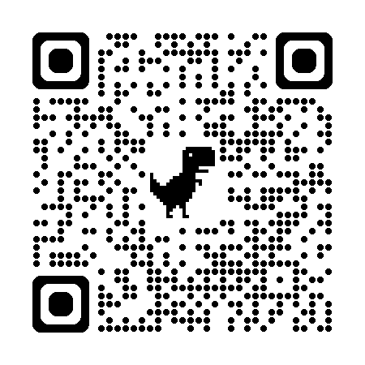

Yuwei LIU
テニュアトラック研究員
Spectroscopic Imaging Team, Spectroscopy and Imaging Division
Japan Synchrotron Radiation Research Institute (JASRI)
SPring-8
About
Yuwei Liuは、JASRI/SPring-8のテニュアトラック研究員です。 現在、SPring-8 BL14B2におけるXAFS実験を担当し、 ユーザー支援、技術開発、データ解析、および放射光実験のための AI支援ツールの開発に取り組んでいます。
材料化学、X線・中性子技術、信号・データ処理を背景として、 化学・物理・数学の知識を統合し、専門分野の異なる研究者が 新しい研究成果を生み出すことを支援することを目指しています。
Research Interests
- 放射光分光におけるデータ駆動型解析
- 放射光を用いた材料研究のための実用的手法開発
- 測定計画および研究支援のためのAI支援ツール
- 化学・物理・データサイエンスをつなぐ学際的応用
Current Responsibilities
🌐 Beamline BL14B2, SPring-8
ビームラインホームページ →
ビームラインホームページ →
🤖 BL14B2 AI Assistance
AIツールを開く →
AIツールを開く →
🧮 AI Calculator for XAFS Samples
XAFS吸収計算ツールを開く →
XAFS吸収計算ツールを開く →
Share This Page

QRコードをスキャンしてホームページを開く
English / 日本語 / 中文